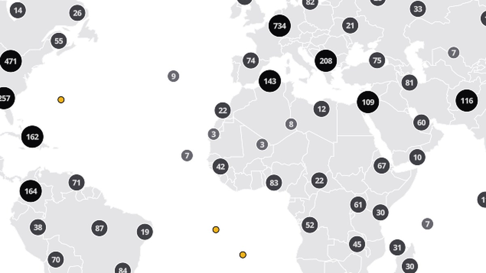

GTHA Winter Maintenance Dashboard
An interactive dashboard that explores winter maintenance spending across the 26 municipalities of the Greater Toronto and Hamilton Area (GTHA), Ontario, from 2015 to 2025.
Open the dashboard (opens in a new tab)
Why we built it
At work, my team at MunicipalVU (opens in a new tab) supports many clients with winter maintenance reviews and optimization. One way we benchmark is with Ontario’s Financial Information Return (FIR) and each municipality’s levels of service. The problem is that this information isn’t in one place.
So I had an idea: why not bring everything together, make it more intuitive, and visualize the data better?
How we built it
Thinh (opens in a new tab) and I started by gathering the data into one place: what each municipality spends on winter maintenance, how many people live there, how many kilometres of road it looks after, and how much snow it gets. You can read more about the data and how we built it in the project overview (opens in a new tab).
What you can explore
As you explore the dashboard, it can help you answer questions like:
- How does a municipality’s winter spending per resident compare with its neighbours?
- Which municipalities spend the most per kilometre of road?
- How much of the operating budget goes to winter maintenance?
- How has spending per resident changed since 2016?
- Do snowier places spend more?
Pick any two municipalities to compare them side by side for a given year.
Disclaimer
First, thank you for reading this far. This is my very first published interactive project, and I wanted to build a practical tool.
The tool isn’t perfect, especially when it comes to the data. We had to interpolate many values, such as population between census years, so the figures are not 100% accurate. If you want the details, the full methodology (opens in a new tab) lists every source and formula, and where the data falls short.
Feel free to contact me if you have questions or suggestions for improvement, or if you’d like to collaborate on a project together.
Open the dashboard (opens in a new tab)Next project
